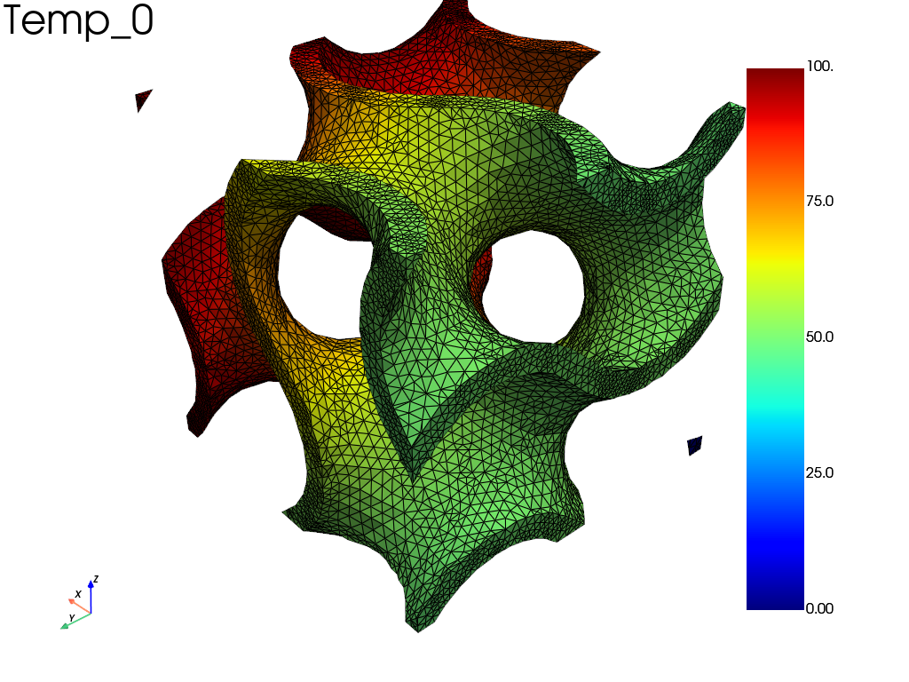

Note
Go to the end to download the full example code.
Transient heat conduction in a gyroid lattice
Transient heat conduction in a 3D gyroid lattice (tet4 mesh read from
util/meshes/gyroid.msh) with fedoo.weakform.HeatEquation. The +X face
is suddenly brought to \(T = 100\) (step time function); the other faces are
insulated and the initial temperature is zero.
About 15 000 nodes and 100 time increments (about 30 s).
import os
from pathlib import Path
import fedoo as fd
Mesh and thermal law
The material values are illustrative and are not those of a real material: the conductivity is about ten times that of a steel and the specific heat about 1000 times smaller, so that the heat diffuses quickly in the lattice.
fd.ModelingSpace("3D")
meshname = "Domain"
nb_iter = 100
try:
example_dir = Path(__file__).resolve().parent
except NameError: # interactive session
example_dir = Path.cwd()
mesh_file = example_dir.parents[1] / "util" / "meshes" / "gyroid.msh"
fd.mesh.import_file(str(mesh_file), name=meshname)
mesh = fd.Mesh[meshname]
K = 500 # thermal conductivity, W/(m.K) (illustrative value)
c = 0.500 # specific heat, J/(kg.K) (illustrative value)
rho = 7800 # density, kg/m3
material = fd.constitutivelaw.ThermalProperties(K, c, rho, name="ThermalLaw")
wf = fd.weakform.HeatEquation(material)
assemb = fd.Assembly.create(wf, meshname, name="Assembling")
# node sets for boundary conditions
Xmin, Xmax = mesh.bounding_box
right = mesh.find_nodes("X", Xmax[0])
Problem, time integrator and boundary conditions
pb = fd.problem.NonLinear("Assembling")
pb.set_time_integrator(fd.time.FIRST_ORDER, fd.time.BackwardEuler())
pb.set_nr_criterion("Displacement", tol=5e-2, max_subiter=5, err0=100)
if not (os.path.isdir("results")):
os.mkdir("results")
results = pb.add_output("results/thermal3D", "Assembling", ["Temp"])
tmax = 10
def step_function(t_fact):
"""Impose the full value as soon as the first increment starts."""
if t_fact == 0:
return 0
else:
return 1
pb.bc.add("Dirichlet", right, "Temp", 100, time_func=step_function)
Dirichlet boundary condition:
var = 'Temp'
n_nodes = 651
value = 100
Solve and plot the temperature at an intermediate time
The saved increment 46 is loaded and plotted. An animation of the whole
history can be written with results.write_movie("results/thermal3D", "Temp").
pb.nlsolve(dt=tmax / nb_iter, tmax=tmax, update_dt=True)
cpos = [
(-2.090457552750125, 1.7582929402632352, 1.707926514944027),
(0.20739316009534275, -0.2296587829717462, -0.38339561081860574),
(0.42357673667356105, -0.37693638734293083, 0.8237121512068624),
]
results.load(46)
pl = results.plot("Temp", show=False)
pl.camera_position = cpos
pl.show()

Iter 1 - Time: 0.10000 - dt 0.10000 - NR iter: 3 - Err: 0.00042
Iter 2 - Time: 0.20000 - dt 0.10000 - NR iter: 2 - Err: 0.03428
Iter 3 - Time: 0.30000 - dt 0.10000 - NR iter: 2 - Err: 0.01712
Iter 4 - Time: 0.40000 - dt 0.10000 - NR iter: 2 - Err: 0.01057
Iter 5 - Time: 0.50000 - dt 0.10000 - NR iter: 2 - Err: 0.00722
Iter 6 - Time: 0.60000 - dt 0.10000 - NR iter: 2 - Err: 0.00528
Iter 7 - Time: 0.70000 - dt 0.10000 - NR iter: 2 - Err: 0.00407
Iter 8 - Time: 0.80000 - dt 0.10000 - NR iter: 2 - Err: 0.00326
Iter 9 - Time: 0.90000 - dt 0.10000 - NR iter: 2 - Err: 0.00268
Iter 10 - Time: 1.00000 - dt 0.10000 - NR iter: 2 - Err: 0.00223
Iter 11 - Time: 1.10000 - dt 0.10000 - NR iter: 2 - Err: 0.00188
Iter 12 - Time: 1.20000 - dt 0.10000 - NR iter: 2 - Err: 0.00160
Iter 13 - Time: 1.30000 - dt 0.10000 - NR iter: 2 - Err: 0.00137
Iter 14 - Time: 1.40000 - dt 0.10000 - NR iter: 2 - Err: 0.00117
Iter 15 - Time: 1.50000 - dt 0.10000 - NR iter: 2 - Err: 0.00101
Iter 16 - Time: 1.60000 - dt 0.10000 - NR iter: 2 - Err: 0.00087
Iter 17 - Time: 1.70000 - dt 0.10000 - NR iter: 2 - Err: 0.00076
Iter 18 - Time: 1.80000 - dt 0.10000 - NR iter: 2 - Err: 0.00067
Iter 19 - Time: 1.90000 - dt 0.10000 - NR iter: 2 - Err: 0.00059
Iter 20 - Time: 2.00000 - dt 0.10000 - NR iter: 2 - Err: 0.00053
Iter 21 - Time: 2.10000 - dt 0.10000 - NR iter: 2 - Err: 0.00047
Iter 22 - Time: 2.20000 - dt 0.10000 - NR iter: 2 - Err: 0.00043
Iter 23 - Time: 2.30000 - dt 0.10000 - NR iter: 2 - Err: 0.00040
Iter 24 - Time: 2.40000 - dt 0.10000 - NR iter: 2 - Err: 0.00037
Iter 25 - Time: 2.50000 - dt 0.10000 - NR iter: 2 - Err: 0.00035
Iter 26 - Time: 2.60000 - dt 0.10000 - NR iter: 2 - Err: 0.00033
Iter 27 - Time: 2.70000 - dt 0.10000 - NR iter: 2 - Err: 0.00032
Iter 28 - Time: 2.80000 - dt 0.10000 - NR iter: 2 - Err: 0.00030
Iter 29 - Time: 2.90000 - dt 0.10000 - NR iter: 2 - Err: 0.00029
Iter 30 - Time: 3.00000 - dt 0.10000 - NR iter: 2 - Err: 0.00028
Iter 31 - Time: 3.10000 - dt 0.10000 - NR iter: 2 - Err: 0.00028
Iter 32 - Time: 3.20000 - dt 0.10000 - NR iter: 2 - Err: 0.00027
Iter 33 - Time: 3.30000 - dt 0.10000 - NR iter: 2 - Err: 0.00026
Iter 34 - Time: 3.40000 - dt 0.10000 - NR iter: 2 - Err: 0.00026
Iter 35 - Time: 3.50000 - dt 0.10000 - NR iter: 2 - Err: 0.00025
Iter 36 - Time: 3.60000 - dt 0.10000 - NR iter: 2 - Err: 0.00025
Iter 37 - Time: 3.70000 - dt 0.10000 - NR iter: 2 - Err: 0.00024
Iter 38 - Time: 3.80000 - dt 0.10000 - NR iter: 2 - Err: 0.00024
Iter 39 - Time: 3.90000 - dt 0.10000 - NR iter: 2 - Err: 0.00023
Iter 40 - Time: 4.00000 - dt 0.10000 - NR iter: 2 - Err: 0.00023
Iter 41 - Time: 4.10000 - dt 0.10000 - NR iter: 2 - Err: 0.00022
Iter 42 - Time: 4.20000 - dt 0.10000 - NR iter: 2 - Err: 0.00022
Iter 43 - Time: 4.30000 - dt 0.10000 - NR iter: 2 - Err: 0.00022
Iter 44 - Time: 4.40000 - dt 0.10000 - NR iter: 2 - Err: 0.00021
Iter 45 - Time: 4.50000 - dt 0.10000 - NR iter: 2 - Err: 0.00021
Iter 46 - Time: 4.60000 - dt 0.10000 - NR iter: 2 - Err: 0.00020
Iter 47 - Time: 4.70000 - dt 0.10000 - NR iter: 2 - Err: 0.00020
Iter 48 - Time: 4.80000 - dt 0.10000 - NR iter: 2 - Err: 0.00020
Iter 49 - Time: 4.90000 - dt 0.10000 - NR iter: 2 - Err: 0.00019
Iter 50 - Time: 5.00000 - dt 0.10000 - NR iter: 2 - Err: 0.00019
Iter 51 - Time: 5.10000 - dt 0.10000 - NR iter: 2 - Err: 0.00018
Iter 52 - Time: 5.20000 - dt 0.10000 - NR iter: 2 - Err: 0.00018
Iter 53 - Time: 5.30000 - dt 0.10000 - NR iter: 2 - Err: 0.00018
Iter 54 - Time: 5.40000 - dt 0.10000 - NR iter: 2 - Err: 0.00017
Iter 55 - Time: 5.50000 - dt 0.10000 - NR iter: 2 - Err: 0.00017
Iter 56 - Time: 5.60000 - dt 0.10000 - NR iter: 2 - Err: 0.00017
Iter 57 - Time: 5.70000 - dt 0.10000 - NR iter: 2 - Err: 0.00016
Iter 58 - Time: 5.80000 - dt 0.10000 - NR iter: 2 - Err: 0.00016
Iter 59 - Time: 5.90000 - dt 0.10000 - NR iter: 2 - Err: 0.00016
Iter 60 - Time: 6.00000 - dt 0.10000 - NR iter: 2 - Err: 0.00015
Iter 61 - Time: 6.10000 - dt 0.10000 - NR iter: 2 - Err: 0.00015
Iter 62 - Time: 6.20000 - dt 0.10000 - NR iter: 2 - Err: 0.00015
Iter 63 - Time: 6.30000 - dt 0.10000 - NR iter: 2 - Err: 0.00015
Iter 64 - Time: 6.40000 - dt 0.10000 - NR iter: 2 - Err: 0.00014
Iter 65 - Time: 6.50000 - dt 0.10000 - NR iter: 2 - Err: 0.00014
Iter 66 - Time: 6.60000 - dt 0.10000 - NR iter: 2 - Err: 0.00014
Iter 67 - Time: 6.70000 - dt 0.10000 - NR iter: 2 - Err: 0.00013
Iter 68 - Time: 6.80000 - dt 0.10000 - NR iter: 2 - Err: 0.00013
Iter 69 - Time: 6.90000 - dt 0.10000 - NR iter: 2 - Err: 0.00013
Iter 70 - Time: 7.00000 - dt 0.10000 - NR iter: 2 - Err: 0.00013
Iter 71 - Time: 7.10000 - dt 0.10000 - NR iter: 2 - Err: 0.00012
Iter 72 - Time: 7.20000 - dt 0.10000 - NR iter: 2 - Err: 0.00012
Iter 73 - Time: 7.30000 - dt 0.10000 - NR iter: 2 - Err: 0.00012
Iter 74 - Time: 7.40000 - dt 0.10000 - NR iter: 2 - Err: 0.00012
Iter 75 - Time: 7.50000 - dt 0.10000 - NR iter: 2 - Err: 0.00011
Iter 76 - Time: 7.60000 - dt 0.10000 - NR iter: 2 - Err: 0.00011
Iter 77 - Time: 7.70000 - dt 0.10000 - NR iter: 2 - Err: 0.00011
Iter 78 - Time: 7.80000 - dt 0.10000 - NR iter: 2 - Err: 0.00011
Iter 79 - Time: 7.90000 - dt 0.10000 - NR iter: 2 - Err: 0.00011
Iter 80 - Time: 8.00000 - dt 0.10000 - NR iter: 2 - Err: 0.00010
Iter 81 - Time: 8.10000 - dt 0.10000 - NR iter: 2 - Err: 0.00010
Iter 82 - Time: 8.20000 - dt 0.10000 - NR iter: 2 - Err: 0.00010
Iter 83 - Time: 8.30000 - dt 0.10000 - NR iter: 2 - Err: 0.00010
Iter 84 - Time: 8.40000 - dt 0.10000 - NR iter: 2 - Err: 0.00010
Iter 85 - Time: 8.50000 - dt 0.10000 - NR iter: 2 - Err: 0.00009
Iter 86 - Time: 8.60000 - dt 0.10000 - NR iter: 2 - Err: 0.00009
Iter 87 - Time: 8.70000 - dt 0.10000 - NR iter: 2 - Err: 0.00009
Iter 88 - Time: 8.80000 - dt 0.10000 - NR iter: 2 - Err: 0.00009
Iter 89 - Time: 8.90000 - dt 0.10000 - NR iter: 2 - Err: 0.00009
Iter 90 - Time: 9.00000 - dt 0.10000 - NR iter: 2 - Err: 0.00008
Iter 91 - Time: 9.10000 - dt 0.10000 - NR iter: 2 - Err: 0.00008
Iter 92 - Time: 9.20000 - dt 0.10000 - NR iter: 2 - Err: 0.00008
Iter 93 - Time: 9.30000 - dt 0.10000 - NR iter: 2 - Err: 0.00008
Iter 94 - Time: 9.40000 - dt 0.10000 - NR iter: 2 - Err: 0.00008
Iter 95 - Time: 9.50000 - dt 0.10000 - NR iter: 2 - Err: 0.00008
Iter 96 - Time: 9.60000 - dt 0.10000 - NR iter: 2 - Err: 0.00008
Iter 97 - Time: 9.70000 - dt 0.10000 - NR iter: 2 - Err: 0.00007
Iter 98 - Time: 9.80000 - dt 0.10000 - NR iter: 2 - Err: 0.00007
Iter 99 - Time: 9.90000 - dt 0.10000 - NR iter: 2 - Err: 0.00007
Iter 100 - Time: 10.00000 - dt 0.10000 - NR iter: 2 - Err: 0.00007
Total running time of the script: (0 minutes 20.662 seconds)